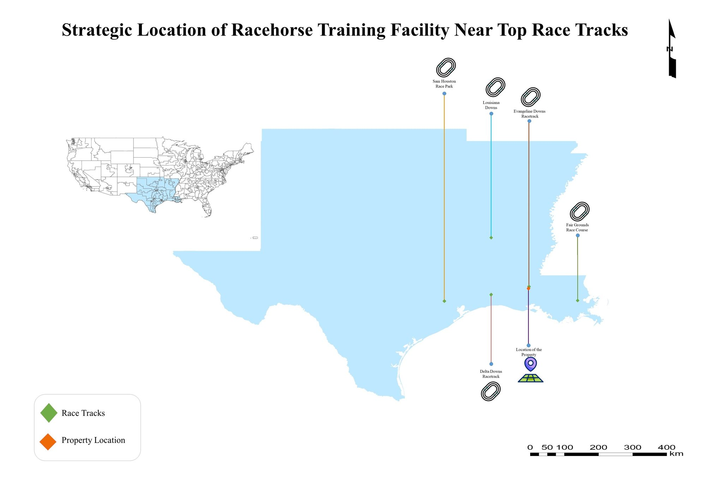

Cartography & Thematic MappingFig. 1 Strategic location of the training facility relative to the top race tracks
Racehorse Training Facility Location Map
Strategic location graphic showing a racehorse training facility relative to the top race tracks.
- Location
- Texas and Louisiana, USA
- Year
- 2024
- Client
- Upwork client, USA
- Tools
- ArcGIS Pro


Challenge
Create a marketing graphic that shows at a glance how close a racehorse training property is to the region's top race tracks.
Approach
- Plotted the property and the five tracks with distinct symbols
- Added leader lines, track icons and labels to each track
- Added a U.S. inset map highlighting the region, plus a scale bar in kilometres
- Exported high-resolution PNG, JPG and PDF
Results
- One graphic shows the property's position relative to all five tracks across Texas and Louisiana
- High-resolution location graphic (20 MB PNG and 16 MB PDF) ready for marketing